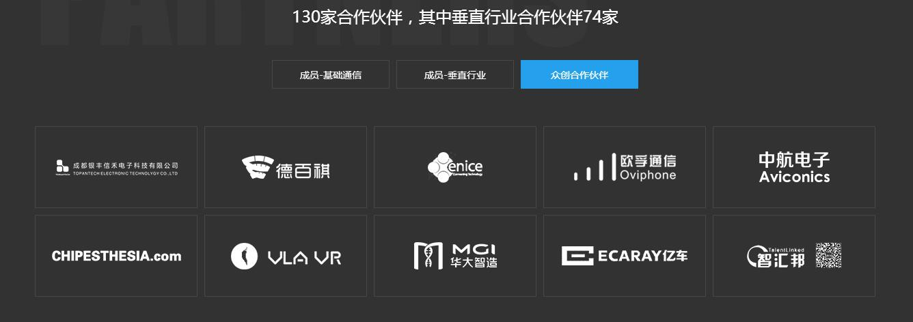
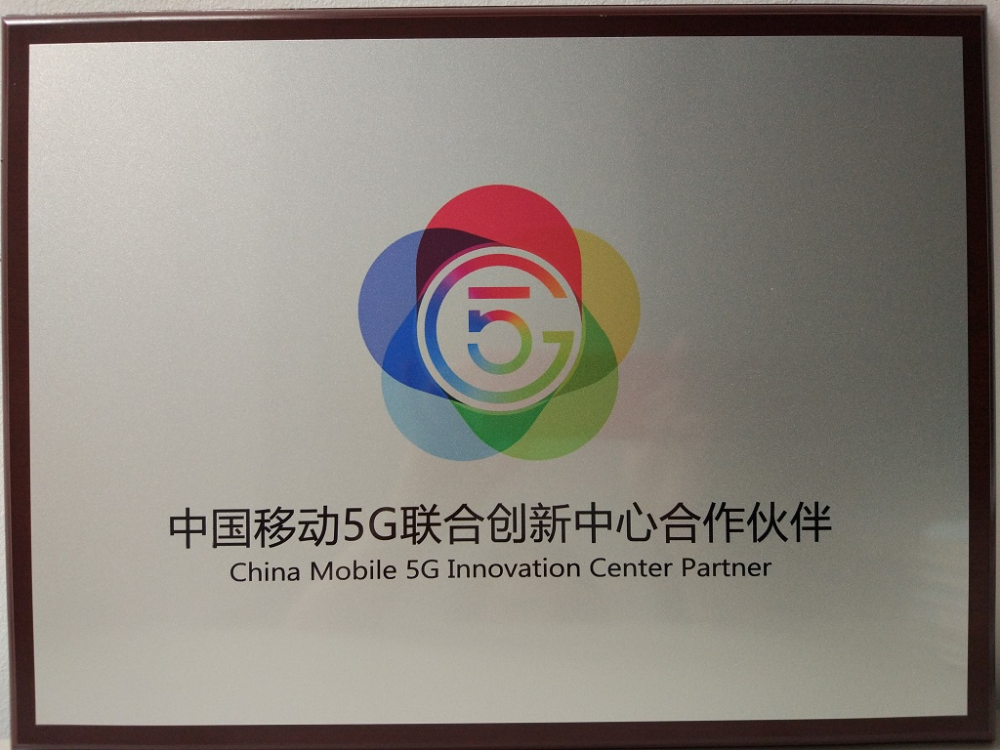

发布日期：2018-05-15
中国移动5G联合创新中心成立于2016年2月，现拥有130家合作伙伴。旨在4G向5G演进过程中，联合通信及垂直行业合作伙伴共同构建合作共赢的融合生态，推进基础通信能力、物联网、车联网、工业互联网、云端机器人、虚拟/曾强现实等科技领域发展，提供端到端技术、解决方案及原型产品、示范、商业模式创新、创业/创新孵化、创新应用等服务。
查看全文中国移动5G联合创新中心成立于2016年2月，现拥有130家合作伙伴。旨在4G向5G演进过程中，联合通信及垂直行业合作伙伴共同构建合作共赢的融合生态，推进基础通信能力、物联网、车联网、工业互联网、云端机器人、虚拟/曾强现实等科技领域发展，提供端到端技术、解决方案及原型产品、示范、商业模式创新、创业/创新孵化、创新应用等服务。
资质证书
